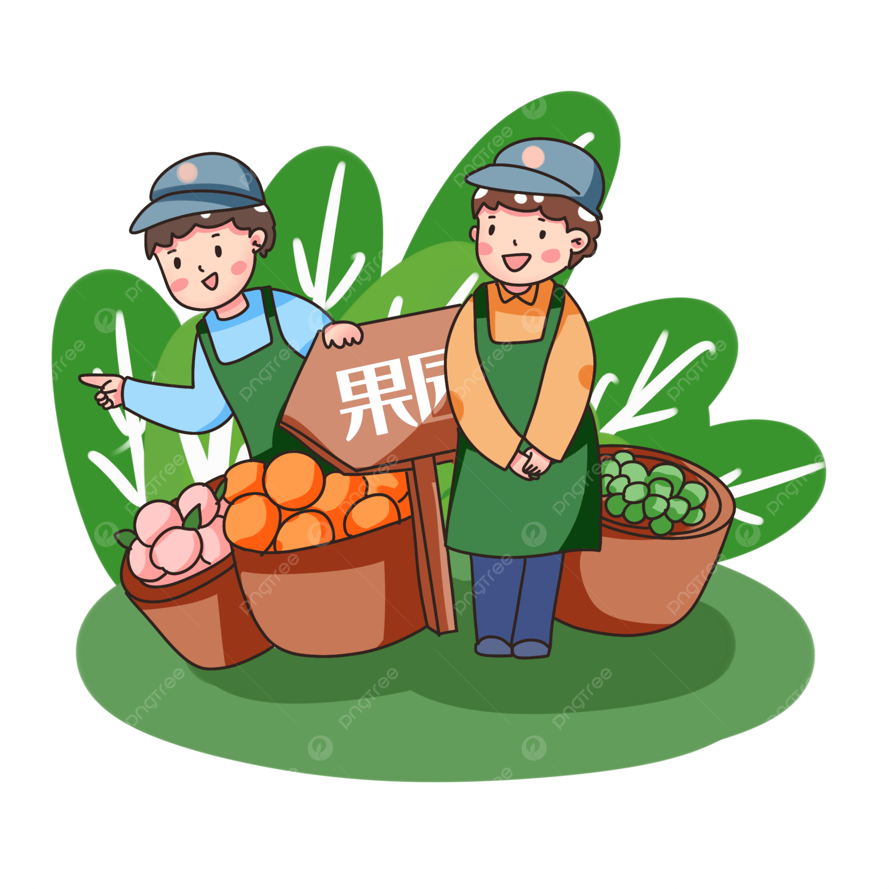

Nuestro Equipo
Profesionales con experiencia técnica y enfoque comunitario

Deivy
Coordinador de proyectos — Especialista en diseño de huertas y gestión de suelos. Tiene experiencia en implementación comunitaria.

Ana
Agrónoma — Coordinadora de programas educativos y transferencia tecnológica para pequeños productores.

Gabriela
Educadora ambiental — Encargada de talleres y formación práctica en técnicas de cultivo sostenible y compostaje.